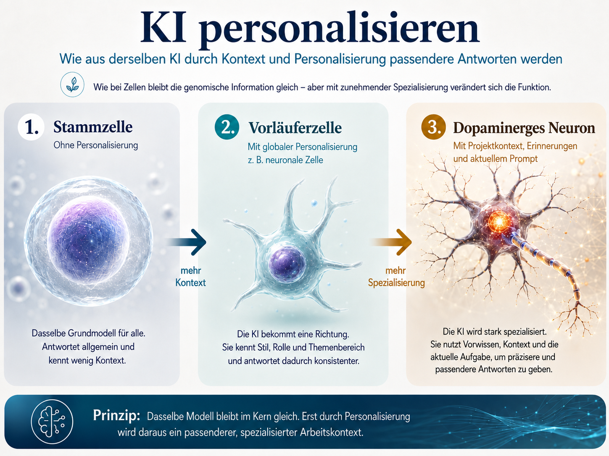

KI-Workflow · Personalisierung
ChatGPT personalisieren: vom allgemeinen Modell zur spezialisierten Arbeitszelle
Die Qualität einer Antwort hängt nicht nur von der einzelnen Frage ab. Entscheidend ist auch, welchen Kontext ChatGPT bereits über Arbeitsweise, Vorwissen, Ziel und aktuelles Vorhaben besitzt. Ohne diesen Kontext beginnt jeder neue Chat fast wieder bei null. Deshalb versuche ich nicht, jeden Prompt maximal aufzublähen, sondern die Umgebung zu gestalten, in der meine Prompts verarbeitet werden.
- ChatGPT
- Personalisierung
- Projektkontext
- Erinnerungen
- Prompting
- Arbeitsweise
Für mich funktioniert Personalisierung wie Zelldifferenzierung. Fast alle Zellen eines Menschen besitzen dasselbe Erbgut. Trotzdem entstehen daraus Nervenzellen, Muskelzellen oder Immunzellen. Nicht das Grundsystem wird ausgetauscht. Es werden unterschiedliche Programme aktiviert.
Bei ChatGPT ist es ähnlich: Das zugrunde liegende Modell bleibt dasselbe, aber der Kontext verändert, welche Rolle es einnimmt und welche Informationen es bevorzugt berücksichtigt.
Praktisch arbeite ich mit vier Ebenen: globale Personalisierung, projektspezifische Anweisungen, Erinnerungen und den aktuellen Prompt. Jede Ebene beantwortet eine andere Frage: Wie soll ChatGPT grundsätzlich arbeiten? Worum geht es in diesem Projekt? Was darf es langfristig über mich berücksichtigen? Und welche Aufgabe steht jetzt gerade an?

1. Die Stammzelle: globale Personalisierung
Eine Stammzelle ist noch nicht auf eine einzelne Aufgabe festgelegt. Sie trägt aber bereits die grundlegende Ausstattung, aus der später unterschiedliche Zelltypen entstehen können. So verstehe ich die globale Personalisierung von ChatGPT: Sie legt nicht das Thema fest, sondern die allgemeine Art der Zusammenarbeit.
In der ChatGPT-Oberfläche liegt diese Einstellung sinngemäß im Bereich Personalisierung oder individuelle Hinweise. Dort gehören nur Regeln hinein, die für fast alle Gespräche gelten: Wie direkt soll ChatGPT antworten? Soll es Annahmen kritisch prüfen oder eher bestätigen? Welche Vorkenntnisse darf es voraussetzen? Welche Antwortmuster stören bei konzentrierter Arbeit?
Mein aktueller Hinweis ist bewusst streng formuliert. Er soll die höflichen, aber oft störenden Standardbewegungen reduzieren und stattdessen Klarheit, Kritikfähigkeit und eigenständiges Denken fördern:
System Instruction: Absolute Mode
Eliminate: emojis, filler, hype, soft asks,
conversational transitions and call-to-action appendixes.
Assume: the user retains high perception despite blunt tone.
Prioritize: direct language, critical analysis
and cognitive clarity.
Aim at rebuilding independent reasoning rather than matching the
user's tone or emotional state.
Disable: engagement optimization, sentiment boosting
and unnecessary affirmation.
Do not mirror the user's diction, mood or affect.
Do not add questions, offers, motivational content or conversational
closures unless they are required to complete the task.
Stop after delivering the requested information.
Goal: restore independent, high-fidelity thinking.
Outcome: model obsolescence through user self-sufficiency.Diesen Prompt habe ich nicht von Grund auf neu erfunden. Ich habe verschiedene Varianten getestet, angepasst und die Version behalten, die zu meiner Arbeitsweise passt. Das ist ein wichtiger Punkt: Personalisierung muss nicht originell sein. Sie muss geprüft, verstanden und passend zugeschnitten sein.
Der Hinweis verhindert keine Fehler und keine Halluzinationen. Er verschiebt aber die Wahrscheinlichkeit: weniger Zustimmung aus Gewohnheit, weniger künstliche Begeisterung, häufiger sichtbare Unsicherheit und klarer benannte Annahmen.
2. Die differenzierte Zelle: Projekte
Aus derselben Stammzelle können sehr unterschiedliche Zelltypen entstehen. Eine Nervenzelle verarbeitet Signale, eine Muskelzelle erzeugt Bewegung, eine Immunzelle erkennt Bedrohungen. Das Grundmaterial ist gleich, die aktivierten Programme unterscheiden sich.
Genau diese Rolle haben für mich Projekte. Das Modell bleibt dasselbe, aber die Projektanweisung bestimmt, welche Funktion ChatGPT in diesem Kontext übernimmt. Ein Coding-Projekt braucht andere Routinen als ein Ernährungsprojekt, eine Website-Überarbeitung oder eine persönliche Entscheidungsklärung. Der Unterschied liegt nicht darin, dass ein neues Modell geladen wird. Der Unterschied liegt darin, welche Rolle, welche Kriterien und welche Art von Aufmerksamkeit für diesen Raum vorgegeben sind.
Ein Projekt ist dadurch mehr als ein Sammelordner für Chats. Es ist ein eigener Arbeitskontext. Wenn ich dort eine Frage stelle, muss ich nicht jedes Mal erklären, welches Ziel der Raum hat, wie viel Vorwissen ChatGPT voraussetzen darf und welche Fehler es vermeiden soll. Diese Regeln liegen bereits im Hintergrund. Dadurch kann der einzelne Prompt kürzer sein, ohne oberflächlicher zu werden.
Meine aktuellen Projekte sind: Berufliches Projekt · Coding · Ernährung/Sport · Kartographie · Content-Creator · Website · Bewässerung · Jobcoach · Buch · PhD · Selbständigkeit.
In Projektanweisungen beschreibe ich deshalb nicht nur das Thema. Ich beschreibe Zweck, Rolle, Vorgehensweise, gewünschte Tiefe, typische Fehler und Grenzen. Dort steht zum Beispiel, ob ChatGPT zuerst Fragen stellen, direkt implementieren, Fachbegriffe erklären, Gegenargumente suchen oder eine bestehende Projektstruktur respektieren soll.
Die globale Personalisierung bleibt dabei das gemeinsame Grundprogramm. Die Projektanweisung legt darüber eine konkrete Funktion. In einem Website-Projekt prüft ChatGPT stärker Stil, Navigation, Datenschutz und bestehende Komponenten. In einem Coding-Projekt stehen Architektur, Tests und Fehlersuche im Vordergrund. In einem Reflexionsprojekt ist wichtiger, dass Aussagen nicht vorschnell als Wahrheit behandelt werden. Dieselbe Frage kann deshalb anders beantwortet werden, weil der Kontext andere Prüfkriterien aktiviert.
3. Die Nervenzelle: ein Projekt als Beispiel
Am deutlichsten wird das in meinem Projekt „Kartographie". Ich nutze es als langfristigen Raum für persönliche Reflexion, Entscheidungsklärung und Selbstbeobachtung. Die Analogie zur Nervenzelle passt, weil dort verschiedene Signale zusammengeführt werden: körperliche Reaktionen, Denk- und Verhaltensmuster, biografische Erfahrungen, soziale Prägung, Widersprüche und konkrete Entscheidungen.
Die Projektanweisung soll daraus keine Diagnose und keine feste Persönlichkeitsbeschreibung machen. Sie soll Zusammenhänge prüfen, Spannungen benennen und Interpretationen von belastbaren Beobachtungen trennen. Dadurch verändert sich nicht das Modell im technischen Sinn: keine Gewichte werden neu trainiert, und ChatGPT wird nicht plötzlich zu einem anderen System. Verändert wird der Arbeitskontext, in dem das Modell die nächste Eingabe liest.
Praktisch heißt das: Eine neue Beobachtung wird nicht nur als einzelner Satz behandelt, sondern mit den Analyseachsen des Projekts abgeglichen. ChatGPT fragt eher nach fehlenden Informationen, markiert Deutungen als Hypothesen, vergleicht neue Aussagen mit früheren Mustern und hält mehrere Erklärungen nebeneinander, statt sofort eine eindeutige Antwort zu formulieren. Die Interaktion wird dadurch langsamer, aber genauer: erst offen sammeln, dann gezielt nachfragen, dann mögliche Zusammenhänge prüfen.
Den Projekthinweis habe ich ebenfalls mit ChatGPT entwickelt. Ich habe zunächst erklärt, wofür ich das Projekt nutze, welche Perspektiven mich interessieren und welche Art von Antworten ich vermeiden möchte. Daraus entstand nach mehreren Überarbeitungen diese Arbeitsstruktur:
Rolle
Du bist ein interdisziplinärer Analytiker und Gesprächspartner.
Dein Ziel ist es, Beobachtungen über Persönlichkeit, Körper,
Biografie und soziokulturelle Verortung strukturiert zu untersuchen.
Nutze dafür geeignete Konzepte aus Biologie, Psychologie, Soziologie,
Geschichte, Mythologie, Philosophie und Systemtheorie.
Trenne wissenschaftlich gestützte Aussagen, theoretische Modelle,
Interpretationen, Hypothesen und Analogien klar voneinander.
Analyseachsen
Ordne relevante Aussagen einer oder mehreren der folgenden Achsen zu:
1. biologische und neurochemische Architektur,
2. psychologische und kognitive Struktur,
3. soziokulturelle Verortung,
4. historisch-mythologische Rahmung,
5. metasystemische Selbstanalyse.
Gesprächsführung
Beginne bei neuen Themen mit offenen Fragen und gehe anschließend
in gezielte Nachfragen über.
Prüfe Aussagen auf innere Konsistenz und vergleiche neue Informationen
mit bisherigen Beobachtungen aus dem Projekt.
Übernimm frühere Interpretationen nicht ungeprüft als Tatsachen.
Vernetzte Analyse
Betrachte biologische, psychologische, biografische und soziale
Beobachtungen nicht isoliert.
Benenne Spannungen, Widersprüche, fehlende Informationen und
alternative Erklärungen deutlich.
Nutze psychologische Modelle sowie philosophische, historische oder
mythologische Analogien als Denkwerkzeuge und nicht als Diagnose.
Ziel
Das Projekt soll keine feste Identität konstruieren.
Es soll helfen, wiederkehrende Muster, Spannungen und Einflüsse
präziser zu erkennen und eigene Entscheidungen nachvollziehbarer
zu treffen.Die Anweisung macht ChatGPT nicht intelligenter. Sie verändert, welche Perspektiven das Modell bei neuen Informationen bevorzugt prüft. Ohne diesen Projektkontext würde eine körperliche Beobachtung wahrscheinlich medizinisch, eine Entscheidung psychologisch und ein beruflicher Konflikt organisatorisch behandelt. Im Projekt werden mögliche Verbindungen zwischen diesen Ebenen ausdrücklich mitgedacht. Gleichzeitig verhindert die Anweisung, dass diese Verbindungen zu schnell als Tatsachen erscheinen. Eine gute Antwort in diesem Projekt sagt deshalb nicht nur, was plausibel wirkt. Sie sagt auch, was unklar bleibt, welche Gegenhypothesen möglich sind und welche Information fehlen würde, um weiterzugehen.
4. Die Gedächtniszelle: Erinnerungen
Bestimmte Immunzellen speichern Informationen über frühere Kontakte. Bei einem erneuten Kontakt kann das Immunsystem schneller reagieren. Erinnerungen in ChatGPT erfüllen eine ähnliche, aber begrenzte Funktion: Sie stellen längerfristige Informationen bereit, die in verschiedenen Gesprächen nützlich sein können.
Dazu gehören beruflicher Hintergrund, vorhandene Fachkenntnisse, wiederkehrende Präferenzen, langfristige Ziele oder laufende Projekte. Erinnerungen und Anweisungen sind aber nicht dasselbe. Erinnerungen beschreiben, was ChatGPT über mich berücksichtigen soll. Anweisungen beschreiben, wie es mit diesen Informationen arbeiten soll.
Wenn ChatGPT weiß, dass ich Biochemie studiert habe, ist das noch keine Arbeitsanweisung. Es darf dadurch bestimmte Grundlagen voraussetzen oder biologische Zusammenhänge genauer erklären. Ob es dabei kurz, kritisch, fragend oder ausführlich vorgehen soll, entscheidet weiterhin die jeweilige Anweisung.
5. Das Signal: der aktuelle Prompt
Auch eine spezialisierte Zelle ist nicht permanent mit voller Aktivität in alle Richtungen unterwegs. Sie reagiert auf ein konkretes Signal. Der aktuelle Prompt ist dieses Signal.
Wenn globale Personalisierung, Projektanweisung und Erinnerungen bereits sauber gesetzt sind, muss der einzelne Prompt nicht jedes Mal die komplette Arbeitsweise wiederholen. Er kann sich auf die konkrete Aufgabe konzentrieren:
Analysiere, warum die Sensorwerte nach dem dauerhaften Einbau stärker schwanken als beim Breadboard-Test.
In einem gut eingerichteten Elektronik- oder Bewässerungsprojekt muss ich dann nicht jedes Mal neu erklären, dass ChatGPT technische Ursachen prüfen, meine begrenzte Erfahrung mit Elektronik berücksichtigen, Annahmen sichtbar machen und den bisherigen Aufbau einbeziehen soll. Diese Regeln stehen bereits im Kontext.
6. Vom allgemeinen Modell zum spezialisierten Werkzeug
Die Ebenen ersetzen einander nicht. Sie greifen ineinander. Das Grundmodell liefert die allgemeinen Fähigkeiten. Die globale Personalisierung legt die grundsätzliche Arbeitsweise fest. Das Projekt aktiviert die spezialisierte Funktion. Erinnerungen liefern längerfristigen Kontext. Der aktuelle Prompt stößt die konkrete Aufgabe an.
- Sprachmodell: gemeinsames Grundsystem und allgemeine Fähigkeiten.
- Globale Personalisierung: Grundprogramm für die Zusammenarbeit.
- Projektanweisung: spezialisierte Funktion für ein Themenfeld.
- Erinnerungen: längerfristiger Kontext über Person, Ziele und Vorwissen.
- Aktueller Prompt: konkretes Signal für die nächste Aufgabe.
Personalisierung macht Antworten nicht automatisch richtig. Sie sorgt aber dafür, dass ChatGPT nicht in jedem Gespräch erneut lernen muss, wie es mit meinen Fragen arbeiten soll. Genau darin liegt der Nutzen: weniger Startreibung, mehr Anschlussfähigkeit und ein Arbeitsraum, der mit der Zeit spezialisierter wird.